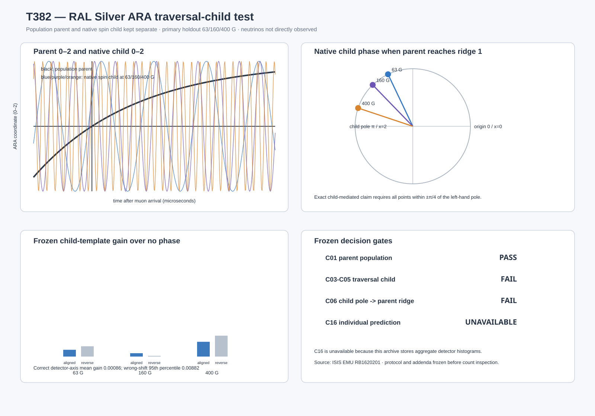

T382 — RAL Silver ARA traversal-child test
PARENT RECOVERED CHILD NOT QUALIFIED
Identity boundary
This is a Class P aggregate μSR test. Phase A is the declared traversal direction of the spin child; the parent is the detector-summed muon population. The neutrino pair is not directly observed, and C16 cannot be evaluated.
Frozen gates
| Cut | Verdict |
|---|---|
| C01 parent population | PASS |
| C03-C05 traversal child | FAIL |
| C06 child pole to parent ridge | FAIL |
| C16 individual advance prediction | UNAVAILABLE |
Visual result

Key measurements
- Parent lifetime: 2.192800 μs; ridge time 1.519933 μs.
- ARA-calibrated child cadence coefficient: 0.01391600 MHz/G.
- External established coefficient revealed after fitting: 0.01355390 MHz/G; relative difference 2.672%.
- Calibration phase concentration: 0.9975.
- Mean holdout pole score: 0.6910, run-bootstrap 95% interval [0.4295, 0.9484].
- Correct detector-axis mean child gain: 0.000862; wrong-shift 95th percentile: 0.008823.
Per-run audit
| run | split | field G | parent NLL gain | child gain | phase at parent ridge rad | native child x at parent ridge |
|---|---|---|---|---|---|---|
| EMU00066572 | calibration | 20 | 3508943.8626 | +99.756% | — | — |
| EMU00066574 | calibration | 20 | 3496383.0880 | +99.763% | — | — |
| EMU00066576 | calibration | 20 | 3498260.0762 | +99.771% | — | — |
| EMU00066573 | calibration | 25 | 17460355.1139 | +0.447% | — | — |
| EMU00066575 | calibration | 25 | 17445536.0558 | +0.001% | — | — |
| EMU00066577 | calibration | 25 | 17480312.0248 | +0.277% | — | — |
| EMU00066581 | diagnostic | 1000 | 17448736.2054 | +0.020% | — | — |
| EMU00066582 | diagnostic | 2000 | 17482349.6651 | +0.102% | — | — |
| EMU00066583 | diagnostic | 4000 | 17419698.3428 | +0.034% | — | — |
| EMU00066578 | holdout | 63 | 17418719.6545 | +0.070% | 2.0147 | 1.4295 |
| EMU00066579 | holdout | 160 | 17514325.2739 | +0.035% | 2.3395 | 1.6952 |
| EMU00066580 | holdout | 400 | 17403848.2470 | +0.153% | 2.8191 | 1.9484 |
| EMU00066584 | validation | 20 | 3578726.6311 | +99.716% | — | — |
| EMU00066571 | validation | 25 | 17428558.4386 | +0.598% | — | — |
Data quality
All frozen checks passed.
Files: 14; native bins: 2,048; detectors: 96.
Interpretation
The parent population cycle was recovered, but the frozen forward/backward spin relation did not qualify as a stable traversal child under the controls. No child-handover interpretation is made.
Aggregate daughter histograms reconstruct a population parent and candidate spin child. Neutrinos are not directly observed, and individual advance prediction is unavailable.
Reproduction
Run t382_ral_silver_traversal_child.py with the bundled Python 3.12 runtime after the frozen source files are present under analysis/muon/data/raw_full.